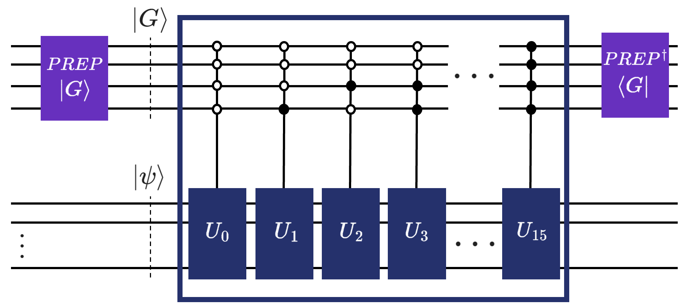

BlockEncoding class 101: Block encoding, LCU, resource estimation#
In classical computer science, we often perform operations directly on matrices, such as inversion, exponentiation, or polynomial transformations. In quantum computing, however, all physical operations must be strictly unitary (represented by matrices \(U\) such that \(U^\dagger U = I\)). This means they must be perfectly reversible and preserve the norm of the state vector.
For closed quantum systems, this isn’t an issue: the system evolves via the complex exponential of its Hamiltonian (\(e^{-iHt}\)), which is inherently unitary. However, we frequently encounter scenarios where we must implement non-unitary operators on quantum hardware. Common motivations include:
Algorithmic Approximations: When simulating dynamics, expanding the exponential \(e^{-iHt}\) (via Taylor series or Suzuki-Trotter expansions) and truncating it at a specific order leaves you with a non-unitary polynomial.
Open Quantum Systems: When a quantum system interacts with an external environment, its effective Hamiltonian becomes non-Hermitian, meaning its evolution operator is no longer unitary.
Linear Algebra Tasks: Algorithms that solve linear systems of equations (like HHL) require applying inherently non-unitary functions, such as matrix inversion (\(A^{-1}\)), directly to an operator.
To solve this, modern quantum algorithms use block encodings to “embed” these non-unitary matrices into a larger, higher-dimensional unitary system. Once embedded, we can use Quantum Signal Processing (QSP) and its generalizations to manipulate the operator and apply arbitrary functional transformations.
Here’s the breakdown of what you’ll learn in this tutorial:
Method |
Purpose |
Typical Use Case |
|---|---|---|
Encodes a NumPy matrix |
Quick prototyping of small, specific matrices |
|
Encodes a Hamiltonian |
Physics and Chemistry simulations |
|
Custom weighted sum of unitaries |
High-efficiency implementation |
|
Estimates gate counts, depth, and qubits. |
Resource analysis and benchmarking |
|
Applies a matrix to a quantum state |
NISQ hardware with manual post-selection |
|
Applies a matrix to a quantum state |
Fault-tolerant / Repeat-Until-Success logic |
|
|
Algebraic arithmetic on encodings |
Constructing complex composite systems |
Once all these concepts become second nature, we’ll build on them in the next tutorial, applying them for performing arbitrary polynomial transformations, solving linear systems, and Hamiltonian simulation. All by using methods of the BlockEncoding class. Clean. Intuitive. Qrisp.
It is important to note that while the evolution within the block encoding is unitary, the ultimate retrieval of the result typically involves a measurement on the ancilla qubits to “project” the system into the desired subspace. In the standard Copenhagen interpretation, this measurement is a non-unitary, non-reversible collapse that triggers the measurement problem—the philosophical and physical gap between smooth unitary evolution and the random nature of observation. While some (including myself) find the Everettian (Many-Worlds) view compelling; where the measurement is just a further unitary entanglement of the observer with the system, it remains a non-standard stance (for now…). Regardless of your preferred interpretation, the practical reality of current hardware requires us to treat measurement as a distinct, non-unitary step that defines the success of our block encoding.
What are block encodings?#
Block encoding is a foundational technique that allows a quantum computer to represent a general matrix \(A\) (where \(\|A\|\leq1\)) as the top-left block of a larger unitary matrix \(U\).
Because a unitary matrix \(U\) always has a spectral norm of \(\|U\| = 1\), any sub-block within it must also have a norm \(\leq 1\). Therefore, to encode a general matrix \(A\), we must scale it by a factor \(\alpha\) such that \(\|A/\alpha\| \leq 1\).
Following the standard definition (see Lin Lin, Chapter 8), we say that a unitary \(U\) is an \((\alpha, m, \epsilon)\)-block-encoding of \(A\) if
Where:
\(\alpha\) (Scaling Factor): Since \(\|U\|=1\), we must scale \(A\) such that \(\|A/\alpha\| \leq 1\). Usually, \(\alpha\) is related to the 1-norm of the coefficients in an LCU decomposition.
\(m\) (Ancilla Qubits): The number of additional qubits required to define the larger Hilbert space in which \(U\) acts.
\(\epsilon\) (Precision): The error tolerance. In practice, our quantum circuit \(U\) only approximates \(A\) to a certain degree of accuracy.
\(\ket{G}\) (Signal State): Often called the “ancilla state,” this is a specific basis state (typically \(\ket{0}^{\otimes m}\)) that defines the subspace where \(A\) is embedded.
Visually, we essentially put a scaled, non-unitary matrix in the top-left block of a larger unitary matrix:
By preparing the ancillas in state \(\ket{G}\) and then projecting back onto \(\bra{G}\) after applying \(U\), we “isolate” the action of \(A\) on our target system.
In Qrisp, we can construct a block encoding in four ways:
.from_array constructs a BlockEncoding from a numpy array,
.from_operator constructs a BlockEncoding directly from a Hamiltonian constructed via QubitOperators, or FermionicOperators,
.from_lcu constructs a BlockEncoding using the Linear Combination of Unitaries approach,
Direct construction via the BlockEncoding class constructor allows you to manually define a new encoding by specifying the normalization factor
alpha,ancillas(as QuantumVariables), and aunitaryfunction, and returningBlockEncoding(alpha, ancillas, unitary).
The first three options are rather self-explanatory, really… You (the user) provide the matrix and/or Hamiltonian you’d like to block encode, or, alternatively, the list of unitaries with the corresponding list of coefficients, invoke the appropriate method for your desired input and, whoosh, Qrisp block encodes it for ya.
The Direct construction method is the route for academics with state-of-the-art custom block encodings up their sleeves, catered to the researchers that would like to implement their custom block encodings (and hopefully add them as methods for this class).
Without getting ahead of ourselves, let’s first showcase the ready-to-go methods:
[1]:
import numpy as np
from qrisp.block_encodings import BlockEncoding
A = np.array([[0,1,0,1],
[1,0,0,0],
[0,0,1,0],
[1,0,0,0]])
B_A = BlockEncoding.from_array(A)
[2]:
from qrisp.block_encodings import BlockEncoding
from qrisp.operators import X, Y
H = X(0)*X(1) + 0.2*Y(0)*Y(1)
B_H = BlockEncoding.from_operator(H)
Think of a Pauli string as a multi-qubit instruction. It is a sequence of Pauli operators (matrices) \(\mathbb{I}\), \(X\leftrightarrow \sigma_X\), \(Y\leftrightarrow\sigma_Y\), and \(Z\leftrightarrow\sigma_Z\). Each individual Pauli matrix is a simple \(2 \times 2\) unitary matrix. When you have multiple qubits, you take the tensor product of these matrices. For example, a Pauli string for a 3-qubit system might look like \(X \otimes Z \otimes I\) (often shortened to \(XZI\)). Since Pauli strings are unitary and Hermitian, they’re a natural fit for quantum hardware. If you can break an operator down into Pauli strings, a quantum computer knows exactly how to execute it.
And this is exactly what these methods do. The former takes an arbitrary square matrix and expresses it as a weighted sum of these Pauli strings (\(A=\sum_j\alpha_j P_j\)), where \(\alpha_j\) is a scalar coefficient (aka a number) and \(P_j\) is a Pauli string, while in the latter, we already provide the Hamiltonian in terms of these Pauli strings.
Essentially, the third approach, .from_lcu , is the epitome of block encoding. I mean, what it does is actually in the acronym: Linear Combination of Unitaries (or for the academic practitioners among you: \(A=\sum_i\alpha_i U_i\)).
If such a matrix \(A\) is expressed as shown above (as a weighted sum of unitaries), the LCU algorithmic primitive uses three (well, technically two) oracles:
\(\text{PREPARE}\) prepares (as its name suggests) a superposition of index states weighted by the square roots of the coefficients \(\alpha_i\) in the ancillary variable:
\[\text{PREP}\ket{0}_a=\sum_{i=0}^{m-1}\sqrt{\frac{\alpha_i}{\alpha}}\ket{i}_a\]\(\text{SELECT}\) applies the corresponding unitary \(U_i\) to the operand (target) variable, controlled by the ancillary variable:
\[\text{SEL}=\sum_{i=0}^{m-1}\ket{i}\bra{i}_a\otimes U_i,\]and finally, \(\text{PREPARE}^\dagger\), which then essentially “unprepares” the ancillary variable.
We have successfully applied \(A\) to our operand when the ancillary variable is measured in the \(\ket{0}\) state.
For the visual learners, here is a figure that will (hopefully) tie everything you read so far together.

We could also define a block encoding as a pair of unitaries \((U, G)\) (\(G\) is another name for PREPARE, \(U\) is another name for SELECT). Their action on quantum states can be captured by the following expressions (don’t worry, we’ll also use words about what this means immediately after):
\(G\) simply prepares the auxiliary variable in a superposition defined by the coefficients (or the weights) of the weighted sum of unitaries (LCU):
Here, we’ve denoted the ancillary variable as index.
\(U\), on the other hand then selects “just the right amount” of each of the underlying unitaries in the weighted sum:
As seen in the figure above, this can be done via multiple controlled operations. In Qrisp, however, we use q_switch, which is just another name for the select operator (multiplexor is another name found in literature for the same thing, btw). What’s so special about q_switch? Well, we’ve implemented a massively more efficient approach about how to apply such a (quantum) switch case (hence the name) based on balanced binary trees. For further information about this, please refer to the paper from Khattar and Gidney, Rise of conditionally clean ancillae for efficient quantum circuit constructions.
How are we feeling? I assume that the researchers in the field could be portrayed with this emoji (😎), while people coming from outside of quantum can feel a bit overwhelmed (🥲). Let’s balance the target audiences by a relevant example that is the cornerstone of solving partial differential equations, where we also explain how to use the .from_lcu method (we went off on a bit of a tangent there, huh? Glad you’re still here - it’ll be worth it!).
Before showing an example, let us first quickly showcase how to manually define a BlockEncoding. Feel free to also skip to the next section, showing the example of block-encoding the discrete Laplacian.
You have been warned, let’s get technical!
To manually define a BlockEncoding, you need to provide the three core components:
\(\alpha\) (alpha): The normalization factor. Since a unitary has a spectral norm of 1, and your matrix \(A\) likely doesn’t, we encode \(A/\alpha\).
Ancilla templates: A list of QuantumVariables that serve as templates for the ancilla variables. For example, the
indexvariable for the quantum switch case.The unitary: A function that takes the ancilla(s) and the operand(s), and applies the block encoding unitary.
Below we give an example that essentially shows the inner workings of the .from_operator method:
[3]:
from qrisp import conjugate, prepare, q_switch, QuantumFloat
from qrisp.operators import X, Y
H = X(0)*X(1) + 0.2*Y(0)*Y(1)
# Returns a list of unitaries, i.e., functions performing in-place operations
# on the operand quantum variable, and a list of coefficients.
unitaries, coeffs = H.unitaries()
n = len(unitaries).bit_length() # Number of qubits for ancillary variable.
alpha = np.sum(coeffs) # Block encoding normalization factor.
# Define block-encoding unitary using LCU = PREP SELECT PREP_dg.
def U(anc, operand):
with conjugate(prepare)(anc, coeffs):
q_switch(anc, unitaries, operand) # quantum switch aka SELECT
BE = BlockEncoding(
alpha, # Block encoding normalization factor.
[QuantumFloat(n)], # Templates for ancilla variables.
U, # Block encoding unitary.
num_ops=1, # Number of operand variables. The default is 1.
is_hermitian=True, # Indicates whether the unitary is Hermitian.
)
This should give you an idea about how to go around implementing your own custom block encodings with the class. If you’re interested, we would love to add your approaches as methods of our class in Qrisp - you can contribute your methods to the Qrisp GitHub repository (no pressure, of course, but highly encouraged, since… you know… open-source software development and all that jazz).
Custom BlockEncoding: the discrete Laplacian example#
In this example, we construct a block encoding of the 1D discrete Laplacian operator with periodic boundary conditions using the .from_lcu method. The discrete Laplace operator is central in numerical physics and differential equations, since it represents the second derivative on a grid.
Let’s start by constructing the matrix in NumPy and visualize it so that everyone is on the same page about what we’ll be doing in this example.
[4]:
import numpy as np
N = 16
I = np.eye(N)
L = 2 * I - np.eye(N, k=1) - np.eye(N, k=-1)
L[0, N-1] = -1
L[N-1, 0] = -1
print(L)
[[ 2. -1. 0. 0. 0. 0. 0. 0. 0. 0. 0. 0. 0. 0. 0. -1.]
[-1. 2. -1. 0. 0. 0. 0. 0. 0. 0. 0. 0. 0. 0. 0. 0.]
[ 0. -1. 2. -1. 0. 0. 0. 0. 0. 0. 0. 0. 0. 0. 0. 0.]
[ 0. 0. -1. 2. -1. 0. 0. 0. 0. 0. 0. 0. 0. 0. 0. 0.]
[ 0. 0. 0. -1. 2. -1. 0. 0. 0. 0. 0. 0. 0. 0. 0. 0.]
[ 0. 0. 0. 0. -1. 2. -1. 0. 0. 0. 0. 0. 0. 0. 0. 0.]
[ 0. 0. 0. 0. 0. -1. 2. -1. 0. 0. 0. 0. 0. 0. 0. 0.]
[ 0. 0. 0. 0. 0. 0. -1. 2. -1. 0. 0. 0. 0. 0. 0. 0.]
[ 0. 0. 0. 0. 0. 0. 0. -1. 2. -1. 0. 0. 0. 0. 0. 0.]
[ 0. 0. 0. 0. 0. 0. 0. 0. -1. 2. -1. 0. 0. 0. 0. 0.]
[ 0. 0. 0. 0. 0. 0. 0. 0. 0. -1. 2. -1. 0. 0. 0. 0.]
[ 0. 0. 0. 0. 0. 0. 0. 0. 0. 0. -1. 2. -1. 0. 0. 0.]
[ 0. 0. 0. 0. 0. 0. 0. 0. 0. 0. 0. -1. 2. -1. 0. 0.]
[ 0. 0. 0. 0. 0. 0. 0. 0. 0. 0. 0. 0. -1. 2. -1. 0.]
[ 0. 0. 0. 0. 0. 0. 0. 0. 0. 0. 0. 0. 0. -1. 2. -1.]
[-1. 0. 0. 0. 0. 0. 0. 0. 0. 0. 0. 0. 0. 0. -1. 2.]]
This is exactly the finite-difference Laplacian with wrap-around endpoints.
We can, of course, use the .from_array method you’re already a master of. Actually, let’s do that real quick:
[5]:
B_L = BlockEncoding.from_array(L)
Why even bother with .from_lcu then? Fair question. The answer hides in what’s happening underneath, and the amount of quantum resources that these two methods use.
Quantum Resource Estimation w/ .resources#
“Whoa, whoa, whoa?! Quantum resources? As in quantum resources in Quantum Resource Estimation?” you ask.
“Yes.”, we answer.
“But isn’t it currently a research endeavor about finding these exact resource estimates?!”
“Yes. But… with Qrisp we made it as simple, clean, and qrispy (had to go for it), as calling the .resources method.”
Let’s see what do we get as an output:
[6]:
from qrisp import QuantumFloat
# Use a 4-qubit variable for a 2^4 by 2^4 matrix.
quantum_resources = B_L.resources(QuantumFloat(4))
print(quantum_resources)
{'gate counts': {'u3': 30, 'cy': 14, 'p': 7, 't': 48, 'h': 32, 't_dg': 64, 'cx': 156, 'x': 15, 'gphase': 2}, 'depth': 220, 'qubits': 12}
Alright, it’s a dictionary with some letters (or a string of them), and a number. The former is the detailed gate count, or rather the number of every specific gate used in the application of the block encoding using .from_array. The second number is the depth of the circuit (for lack of a better word - we’re trying to eliminate the sacrilegious word “circuit” in qrisp), which is related to how long the calculation will take on an actual quantum computer. The longer it takes, the more likely that the qubits decohere, resulting in noisy results that tell us nothing. This is, of course, only a problem when executing on quantum hardware. alternatively, you can also avoid this by simulating your algorithms either with the built-in Qrisp simulator, or an alternative of your choice.
Let’s get back on track. We’ve block encoded the Laplacian and gathered the resources… Let’s now do the exact same thing, but more efficiently by constructing a custom block encoding with .from_lcu.
The Laplacian can be decomposed as \(\Delta = 2\mathbb{I}-V-V^\dagger\), where
\(\mathbb{I}\) is the identity,
\(V\) is the forward shift operator: \(V\ket{k}=-\ket{k+1 \mod N}\), and
\(V^\dagger\) is the backward shift \(V^\dagger\ket{k}=-\ket{k-1\mod N}\).
The negative sign matches the chosen finite-difference convention.
This decomposition fits naturally into the LCU framework, because \(\mathbb{I}\), \(V\), and \(V^\dagger\) are themselves unitaries, afterall:
This can be easily implemented in Qrisp with the built-in arithmetic it allows:
[7]:
from qrisp import gphase
def I(qv):
# Identity: do nothing
pass
def V(qv):
# Forward cyclic shift with a global phase -1
qv += 1
gphase(np.pi, qv[0]) # multiply by -1
def V_dg(qv):
# Backward cyclic shift with a global phase -1
qv -= 1
gphase(np.pi, qv[0])
Now combine them as a linear combination of unitaries with coefficients [2, 1, 1]:
[8]:
unitaries = [I, V, V_dg]
coeffs = np.array([2.0, 1.0, 1.0])
And thats it… that’s all the ingredients we need to define a custom block encoding with .from_lcu. We just provide the coefficients and the unitaries, and the BlockEncoding class does all the management of the coefficients, ancillary qubits, and whatever else under the sun. In future releases we also want it to be able do perform one’s taxes.
All jokes aside, let’s block encode this Laplacian and check the resources if it’s actually more efficient (it is) before explaining why it’s more efficient.
[9]:
BE = BlockEncoding.from_lcu(coeffs, unitaries)
# Use a 4-qubit variable for a 2^4 by 2^4 matrix.
quantum_resources = BE.resources(QuantumFloat(4))
print(quantum_resources)
{'gate counts': {'u3': 6, 's': 6, 'p': 2, 't': 18, 'h': 22, 't_dg': 20, 'cx': 72, 'x': 5, 'gphase': 2, 'measure': 6}, 'depth': 60, 'qubits': 11}
Let’s now compare the outputs.
{‘gate counts’: {‘x’: 15, ‘p’: 7, ‘t’: 48, ‘cy’: 14, ‘gphase’: 2, ‘t_dg’: 64, ‘u3’: 30, ‘cx’: 156, ‘h’: 32}, ‘depth’: 220, ‘qubits’: 12}
{‘gate counts’: {‘x’: 5, ‘s’: 6, ‘p’: 2, ‘t’: 18, ‘gphase’: 2, ‘t_dg’: 20, ‘u3’: 6, ‘cx’: 72, ‘h’: 22, ‘measure’: 6}, ‘depth’: 60, ‘qubits’: 11}
Even if you don’t know what any of the letters or strings actually mean, you can clearly see that the values of the bottom dictionary are lower than the one on the top. To say it in quantum jargon, the .from_lcu is (much) more efficient than .from_array, which is just a simpler interface to .from_operator. And the difference will grow for larger matrix size \(N\).
Why is that? Well, it all comes down to which unitaries and how many do we want to combine to construct the block encoding. In the custom block encoding it’s rather self apparent: we need three unitaries to construct the Laplacian, as seen above. The .from_array and .from_operator methods, on the other hand, construct block encodings by decomposing the Hamiltonian into a linear combination of Pauli strings. If you’re asking what is a Pauli string, here’s a quick intuitive answer.
Pauli \(n\)-strings form a basis for the operator space on n-qubits. So you can always write a \(n\)-qubit linear operator in terms of Paulis.
When you use a method like .from_array, the algorithm has no “intuition” about the structure of your matrix. It performs a systematic projection of your matrix onto every possible Pauli string. For an \(n\)-qubit system, there are \(4^n\) possible Pauli strings. If your matrix doesn’t happen to align perfectly with the Pauli basis, the decomposition results in a massive list of strings, many with tiny coefficients.
In the case of our 1D Laplacian, Pauli Decomposition might require up to \(4^4=256\) (to be precise: \(3\cdot2^n\) for an \(n\)-qubit discrete Laplacian) different Pauli strings to represent the matrix. LCU, on the other hand, requires only 3 custom unitaries (like the ones we manually defined) to represent the exact same matrix.
Building a block encoding requires a number of auxiliary qubits and gate operations proportional to the number of terms in your sum. The more terms, the more complex the circuit, leading to more credits it costs to execute on hardware, while also sometimes requiring more qubits.
Having explored various approaches to constructing block encodings and analyzing their quantum resource requirements, this already sounds particularly valuable for researchers developing new methods to block-encode specific matrices. Once your custom block encoding is implemented in Qrisp, performing resource estimation becomes straightforward: simply call.resources. If you’d like assistance integrating your approach, please get in touch so we can include it in future releases. Our goal is to gather a wide range of block encoding techniques in one place, allowing users to easily select the most resource-efficient method for their particular problem.
Let’s show how we can obtain the state we’ve successfully applied LCU onto, or run the simulation with the Repeat-Until-Success protocol.
Applying BlockEncodings w/ .apply & .apply_rus#
Now that we’ve built our block encoding, we face the ultimate “So what?” moment. A block encoding is like having a high-performance car sitting in your garage. It’s impressive to look at, but eventually, you actually want to drive it. In our case, “driving” means applying that matrix to a quantum state.
This is where .apply and .apply_rus come into play.
The manual, NISQy way: .apply#
The .apply method is the straightforward way to use your block encoding. It simply adds the necessary gates to your circuit to perform the unitary \(U\). However, there’s a catch. Because we are block encoding a non-unitary matrix \(A\) inside a larger unitary \(U\), the “math” only works out perfectly when our extra qubits (the ancillas) start in the \(\ket{0}\) state and end in the \(\ket{0}\) state. When you call .apply(operand), Qrisp returns a list of these ancilla variables. To get the correct result, you have to perform post-selection. This is a fancy way of saying: “Run the experiment, measure the ancillas, and if they aren’t all zero, throw that result in the trash and try again”. As you can imagine, if your success probability is low, you’ll be throwing away a lot of data. It’s effective, but about as efficient as trying to win the lottery by buying one ticket at a time and waiting a week for the results.
Since current quantum hardware often struggles with mid-circuit measurements and real-time feedback (the features required for RUS), we frequently have to fall back on post-selection. Essentially you run the experiment many times, but you only keep the actors who followed the script perfectly (i.e., the ancillas stayed in \(\ket{0}\)).
Here is how you implement this for a Heisenberg Hamiltonian using a standard simulator (or your favorite NISQ hardware) backend.
[10]:
from qrisp import *
from qrisp.block_encodings import BlockEncoding
from qrisp.operators import X, Y, Z
H = sum(X(i)*X(i+1) + Y(i)*Y(i+1) + Z(i)*Z(i+1) for i in range(3))
BE = BlockEncoding.from_operator(H)
b = np.array([1.,2.,3.,1.,1.,2.,3.,1.,1.,2.,3.,1.,1.,2.,3.,1.])
operand = QuantumFloat(4)
prepare(operand, b)
ancillas = BE.apply(operand)
Utilize the Qrisp Backend Interface to define a backend. While this example uses the Qiskit Aer simulator, the interface also supports physical quantum backends.
[11]:
from qrisp.interface import QiskitBackend
from qiskit_aer import AerSimulator
example_backend = QiskitBackend(backend = AerSimulator())
# Use backend keyword to specify quantum backend
res_dict = multi_measurement([operand] + ancillas,
shots=1000000,
backend=example_backend)
# Post-selection on ancillas being in |0> state
filtered_dict = {k[0]: p for k, p in res_dict.items() \
if all(x == 0 for x in k[1:])}
success_prob = sum(filtered_dict.values())
filtered_dict = {k: p / success_prob for k, p in filtered_dict.items()}
amps = np.sqrt([filtered_dict.get(i,0) for i in range(16)])
print(amps)
[0.13530449 0.35803649 0.13734249 0.22436625 0.31314236 0.26791179
0.3113159 0.1362021 0.13198564 0.35721875 0.13490765 0.22399664
0.31471053 0.26689103 0.31194153 0.13421943]
Alright, we have obtained something. Let’s further figure out what that something actually is. Even before that, let’s run a classical comparison that will help us make sense of the output. Let us quickly perform some magic, what’s important here is the output, which is the classically obtained result for the same problem we’ve solved quantumly using .apply and post-selection.
[12]:
H_arr = H.to_array()
psi = H_arr @ b
psi = psi / np.linalg.norm(psi)
print(psi)
print(np.linalg.norm(psi-amps))
[0.13416408+0.j 0.35777088+0.j 0.13416408+0.j 0.2236068 +0.j
0.31304952+0.j 0.26832816+0.j 0.31304952+0.j 0.13416408+0.j
0.13416408+0.j 0.35777088+0.j 0.13416408+0.j 0.2236068 +0.j
0.31304952+0.j 0.26832816+0.j 0.31304952+0.j 0.13416408+0.j]
0.005585821626674829
If we, again, compare the two results, as well as the variance, we see that the quantum results fluctuate by quite a lot. It is becasue of the probabilistic nature of quantum computation - if we would increase the number of shots, the variance would decrease, and the results won’t fluctuate that much.
This is the NISQ way, post-selection based to solve this. We designed Qrisp as being forward thinking with a lot of the infrastructure required for the Fault Tolerance era already introduced, like real-time measurements and repeat until success procedures. Let’s show how to use the latter with our BlockEncodings, and see how the variance of the results looks like then.
The automatic, FT way: .apply_rus#
If you don’t feel like manually filtering your data, you can instead use .apply_rus. The RUS stands for Repeat-Until-Success. This approach automatically handles the filtering at run time. While the same number of quantum shots are taken, unsuccessful ones are discarded dynamically.
Instead of you manually checking the ancillas, the .apply_rus method wraps the entire process into a loop:
It prepares your input state.
It applies the block encoding.
It measures the ancillas.
If the ancillas are not zero, it resets them and starts over automatically.
If they are zero, it stops. You now have the exact state you wanted. If not, the loop repeats again.
This protocol turns a probabilistic process into a deterministic one. From your perspective as a coder, it looks like the matrix was applied successfully 100% of the time. Let’s show that with the same example from above.
[13]:
from qrisp import *
from qrisp.block_encodings import BlockEncoding
from qrisp.operators import X, Y, Z
H = sum(X(i)*X(i+1) + Y(i)*Y(i+1) + Z(i)*Z(i+1) for i in range(3))
BE = BlockEncoding.from_operator(H)
# Prepare initial system state
def operand_prep():
operand = QuantumFloat(4)
b = np.array([1.,2.,3.,1.,1.,2.,3.,1.,1.,2.,3.,1.,1.,2.,3.,1.])
prepare(operand, b)
return operand
# Apply the operator to an initial system state
@terminal_sampling
def main():
return BE.apply_rus(operand_prep)()
res_dict = main()
amps = np.sqrt([res_dict.get(i,0) for i in range(16)])
H_arr = H.to_array()
psi = H_arr @ b
psi = psi / np.linalg.norm(psi)
print(psi)
print(np.linalg.norm(psi-amps))
[0.13416408+0.j 0.35777088+0.j 0.13416408+0.j 0.2236068 +0.j
0.31304952+0.j 0.26832816+0.j 0.31304952+0.j 0.13416408+0.j
0.13416408+0.j 0.35777088+0.j 0.13416408+0.j 0.2236068 +0.j
0.31304952+0.j 0.26832816+0.j 0.31304952+0.j 0.13416408+0.j]
1.234088245905326e-07
A few things to note here. We pass the operand (the state we have prepared and want to apply the operator to) as a function, as oppossed as a QuantumVariable. The second difference is the way we obtain the BlockEncoding and apply the .apply_rus, which is within a main function. This is because we use the Jasp compilation pipeline, which allows us to avoid the pythonic compilation bottleneck. You can learn more about it in the Jasp tutorial.
Next, we invoke the @terminal_sampling decorator. Simply put, this decorator tells the compiler to simulate the quantum program using our fast state vector simulator and sample the final measurement distribution. Instead of manually writing a classical loop to execute the program repeatedly and gather measurement statistics, @terminal_sampling automatically handles the heavy lifting of sampling this probability. In the end, we obtain a result that is consistent when repeating the simulation.
Before delving into the final section of this tutorial, let’s quickly recap. The .apply allows you to use block encodings on today’s NISQ hardware, or if you’re running on a state vector simulator and don’t want the overhead of the RUS loop logic.
But for future “real-world” (or real-simulation) use cases, .apply_rus is your best friend. It takes a function that prepares your qubits (operand_prep) and returns a new function that handles the messy “measure-reset-repeat” logic for you.
Oh, and you can perform quantum resource estimation even before simulating. How nice, right?!
The .apply_rus is just an .apply and post selection wrapped into a loop. From the software perspective the NISQ/FT distinctions don’t really make sense. This comparison is done by applying these considerations through the lense of the state of current hardware, which yet don’t allow for running real-time measurement protocols such as RUS.
Constructing new BlockEncodings using +, -, *, @, .kron()#
Up until now, we’ve treated Block Encodings as static objects: you build them, and you apply them. But in the real world (and especially in quantum chemistry or condensed matter physics), operators are rarely solitary. They are sums of interactions, products of symmetries, and scaled potentials.
To handle this, Qrisp allows you to perform a full suite of algebraic operations directly on your BlockEncoding objects:
Addition (
+): Implements \(A + B\) via the LCU framework.Subtraction (
-): Implements \(A - B\).Scalar Multiplication (
*): Scales an operator by a constant \(c \cdot A\).Negation (
-A): Flips the sign of the operator.Matrix Multiplication (
@): Composes two operators \(A \cdot B\).Kronecker Product (
.kron()): Performs the tensor product \(A \otimes B\) to expand the Hilbert space.
We will expand this list in future releases, as well as implement more efficient ways for some of these operations. For those curious, we took inspiration from the paper Products between block-encodings to implement the underlying logic.
Why and how would this be useful, you might be wondering. Well, if you had to manually track the coefficients, normalization factors (\(\alpha\)), and ancilla registers every time you wanted to add two matrices together, you’d probably go back to classical computing by lunchtime. This is where the BlockEncoding arithmetic comes in. In Qrisp, we treat BlockEncoding objects as first-class programming abstractions.
Think of it like this: When you write x = 1.5 * y + 2.0, you don’t care how the CPU handles floating-point registers or carry bits. You care about the relationship between x and y.
By using standard Python operators (+, -, *, @) on BlockEncoding objects, you are:
Automating LCU: Addition and subtraction automatically trigger the Linear Combination of Unitaries (LCU) framework behind the scenes.
Managing Complexity: Qrisp keeps track of the expanding ancilla requirements and the cumulative normalization factor (\(\alpha\)) so you don’t have to.
Mirroring the Math: Your code starts looking exactly like the physics paper you’re trying to implement.
Note of Caution: Just because you can add fifty block encodings together doesn’t mean you should. Each arithmetic operation adds circuit depth and ancilla qubits. For complex polynomials, Quantum Signal Processing (QSP) is usually the more efficient path (more on that on the other tutorial), but for building complex composite Hamiltonians, arithmetic is king. What do we mean by complex composite Hamiltonians? You could, for example, add a block-encoded discrete Laplcaian to another block encoded operator resulting in a linear combination of block encodings.
Let’s go through some simple examples!
[14]:
from qrisp import *
from qrisp.block_encodings import BlockEncoding
from qrisp.operators import X, Z
# Define two simple operators
A = BlockEncoding.from_operator(X(0) * X(1))
B = BlockEncoding.from_operator(Z(0) * Z(1))
# Perform arithmetic: 2.5 * A - B
# Qrisp handles the LCU logic and the Z-gate for the sign flip automatically
# In practice, use BlockEncoding.from_operator(2.5 * X(0) * X(1) - Z(0) * Z(1))
H_total = 2.5 * A - B
def prep_zeros():
return QuantumVariable(2)
@terminal_sampling
def run_arithmetic():
# Use apply_rus to see the result of the combined operator
return H_total.apply_rus(prep_zeros)()
print(f"New Alpha: {H_total.alpha}") # Alpha is now 2.5 + 1.0 = 3.5
print(f"Resulting Distribution: {run_arithmetic()}")
New Alpha: 3.5
Resulting Distribution: {3: 0.8620689475330789, 0: 0.13793105246692108}
In this example, we’ll build a composite operator \(H_{total} = 2.5\cdot A - B\). This demonstrates how Qrisp handles both scalar multiplication and the sign flip of subtraction. Let’s do another one!
[15]:
from qrisp import *
from qrisp.block_encodings import BlockEncoding
from qrisp.operators import X, Z
# Create two 2-qubit block encodings
BE1 = BlockEncoding.from_operator(X(0) * X(1))
BE2 = BlockEncoding.from_operator(Z(0) * Z(1))
# 1. Expand the Hilbert space: BE1 (on qubits 0,1) tensor BE2 (on qubits 2,3)
# The resulting BE acts on 4 qubits total.
BE_large = BE1.kron(BE2)
# 2. Composition: Multiply the large system by itself (A^2)
# The '@' operator implements operator multiplication (matrix product)
BE_squared = BE_large @ BE_large
def operand_prep():
return QuantumVariable(2), QuantumVariable(2)
@terminal_sampling
def main():
return BE_squared.apply_rus(operand_prep)()
print(BE_squared.resources(QuantumVariable(2), QuantumVariable(2)))
{'gate counts': {'x': 4, 'z': 4}, 'depth': 2, 'qubits': 4}
Sometimes you want to build a large system by gluing smaller ones together. Here, we use .kron() to combine two 2-qubit systems into a 4-qubit system, and then use @ to compose it with another operator.
Recap#
We have journeyed from the mathematical definition of Block Encodings to high-level arithmetic operations on quantum operators. Here is the distilled wisdom from this tutorial:
The Bridge to Unitary: Block Encoding is the essential technique that allows us to run non-unitary math (like Hamiltonians or Laplacians) on quantum computers by embedding them into larger spaces.
Flexibility in Construction: Qrisp meets you where you are. Use .from_array for quick prototyping, .from_operator for chemistry/physics Hamiltonians, or .from_lcu when you need maximum efficiency and custom unitary definitions.
Efficiency Matters: As demonstrated with the Laplacian, choosing the right encoding strategy (LCU vs. Pauli decomposition) can drastically reduce circuit depth and gate count. The .resources method is your built-in tool to verify this.
Deterministic Execution: While .apply works for NISQ experiments via post-selection, .apply_rus leverages the Repeat-Until-Success protocol to provide deterministic, Fault-Tolerant compatible execution.
Composability: You can build complex operators using standard Python math (
+,-,@,*). Qrisp handles the heavy lifting of managing coefficients and ancilla qubits, letting you focus on the algorithm logic.
By mastering Block Encodings in Qrisp, you aren’t just manipulating matrices; you are structuring quantum algorithms in a way that is modular, scalable, and ready for the future of fault-tolerant computing. Now, go forth and encode!
Motivation for BE 201#
Feeling like you mastered the BlockEncodings class? Good. Now let’s use it on some state-of-the-art research applications. In the next tutorial, we move from simple algebra to transforming a matrix’s entire spectrum using Quantum Signal Processing (QSP).
The logic is elegant: by interleaving your block encoding with specific phase shifts, you can apply any polynomial \(P(A)\) to your matrix. While finding these “phase angles” is usually a classical nightmare, Qrisp calculates them for you internally.
We’ve distilled these world-class techniques into three simple methods:
.poly: Apply custom polynomial transformations.
.inv: Perform matrix inversion via approximating by a linear combination of Chebyshev polynomials.
.sim: Execute Hamiltonian simulation with optimal scaling.
Ready to see the magic? Journey onwards to the next tutorial to continue learning about quantum linear algebra and how Qrisp’s BlockEncoding interface makes it simple and intuitive!